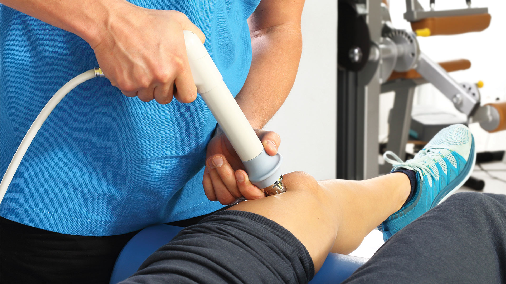
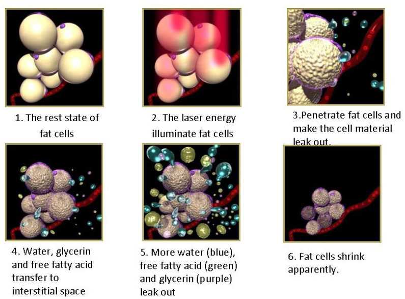
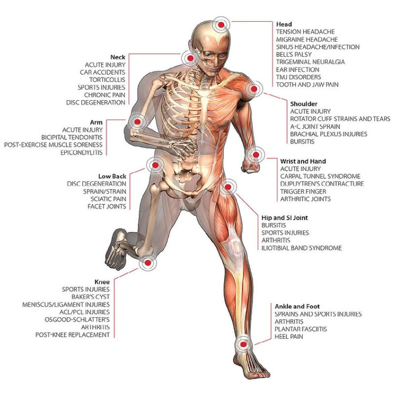

Cold Laser Therapy

WHAT’S COLD LASER THERAPY?
Cold laser therapy is low-intensity laser therapy that stimulates healing, reduces inflammation and shrinks fat cells while using low levels of light.
The technique is called “cold” laser therapy because the low levels of light aren’t enough to heat your body’s tissue. The level of light is low when compared to other forms of laser therapy, such as those used to destroy tumors and coagulate tissue.
FAT REDUCTION – BODY SCULPTING

STIMULATES HEALING – REDUCES INFLAMMATION

FOR MORE INFORMATION
At Sacramento Applied Kinesiology in Roseville, we take a comprehensive approach to treating patients using the FX-635 Laser Therapy. To learn more about how we help you find relief for your plantar fasciitis, call Sacramento Applied Kinesiology in Roseville at (916) 771-4151 to schedule an appointment today.
Are You Ready To Start Kinesiology?
We are always ready to welcome you in our center!